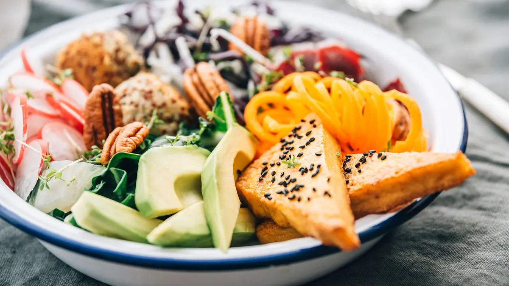

This 7 day meal plan is a typical weekly diet for our Thank You Sculptress winner Carly Young. She demonstrates how you can combine the products within Sculptress Diet range into your diet
Sculptress Diet Shake
Strawberries and mixed grapes.
Mixed seeded granary sandwich with tuna, lighter than light mayo, cucumber, pepper and mixed salad leaves. Thin spread of reduced fat butter.
Post workout: sculptress RTD
Steamed salmon, steamed broccoli, cauliflower and carrots, brown basmati rice.
1 x green tea | 8 x glasses of water | Bottle of water when exercising
Sculptress Bar
Granny Smith Apple
Mixed seeded granary sandwich with turkey breast, avocado, cucumber, pepper and mixed salad leaves. Thin spread of reduced fat butter.
Sculptress Diet Shake
Chicken breast, oven roasted mixed peppers, red onion and courgette with sweet potato.
1 x green tea | 8 x glasses of water
Porridge with soya milk and chopped banana.
Low fat yoghurt with strawberries.
Mixed seeded granary sandwich with ham and mustard, cucumber, pepper and mixed salad leaves. Thin spread of reduced fat butter.
Granny Smith apple and a handful of almonds.
Post workout: Sculptress Diet Shake
1 x green tea | 8 x glasses of water | Bottle of water when exercising
Sculptress Diet Shake
Granny Smith Apple
Mixed seeded granary sandwich with tuna, lighter than light mayo, cucumber, pepper and mixed salad leaves. Thin spread of reduced fat butter.
Small chocolate treat.
Steamed haddock, steamed broccoli, Cauliflower and carrots, brown basmati rice.
1 x green tea | 8 x glasses of water | Bottle of water when exercising
Sculptress Bar
Strawberries and mixed grapes.
Sweet potato and butternut squash soup, multi seeded granary bread.
Granny Smith apple and a handful of walnuts.
Salmon and ginger fishcakes with salad and a homemade dressing of mustard and balsamic vinegar.
1 x green tea | 8 x glasses of water | Bottle of water when exercising
Fruit and nut cereal with soya milk.
Low fat yoghurt.
Sculptress Diet Shake
1 biscuit and a skinny latte.
Takeaway or meal out.
1 x green tea | 8 x glasses of water | 2 x glasses of wine | 1 x skinny latte
Porridge with soya milk and berries.
Fruit smoothie and a banana.
Sculptress Diet Shake
Post workout: with an apple sculptress RTD
Wholemeal pasta, chicken or prawns, vegetables fried in 1 tsp extra virgin olive oil, carton of chopped tomatoes with basil, oregano and a side salad.
1 x homemade smoothie | 1 x green tea | 8 x glasses of water | 2 x glasses of wine | 2 x bottles of water when cycling